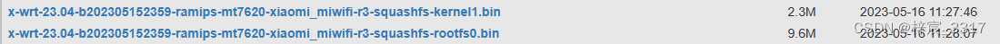
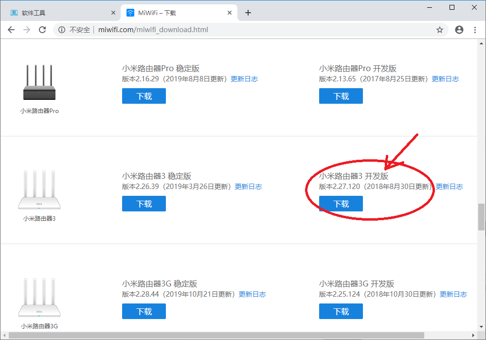
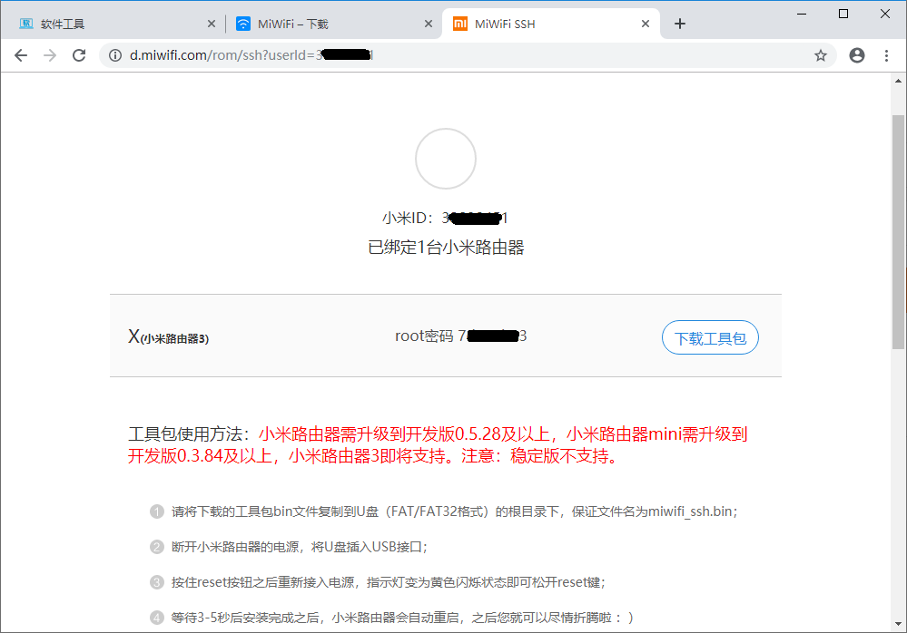
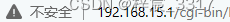
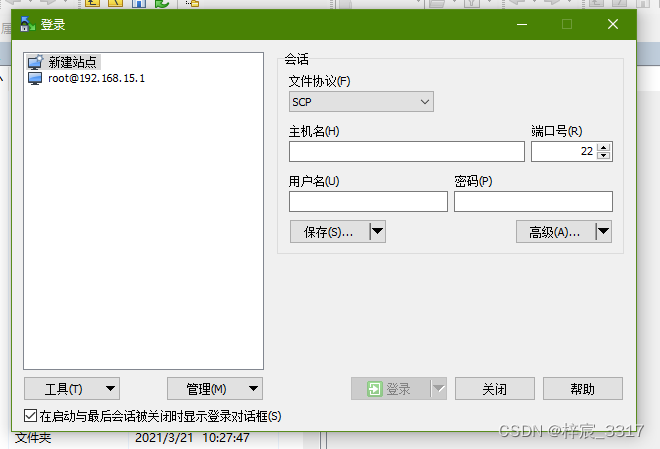
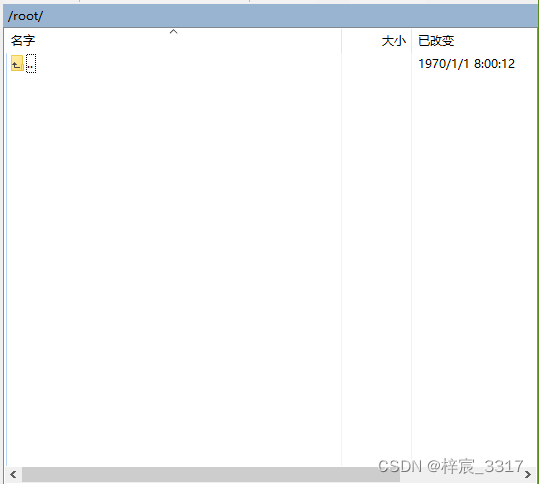
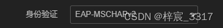
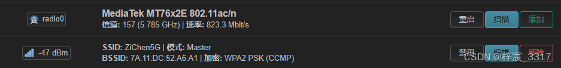
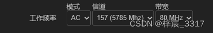
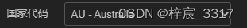

本篇参考:
https://www.bilibili.com/video/BV1dL411A72f
https://blog.csdn.net/adingge/article/details/125362140
小米路由器3刷 OpenWrt
恩山论坛贴
本篇仅作为记录，实际设备不同可能导致流程不同
固件下载地址(用的是LEDE/OpenWrt固件): https://downloads.x-wrt.com/rom/ 固件的23.04可能随版本更新有所变化
我下载的2个固件为：
x-wrt-23.04-b202305152359-ramips-mt7620-xiaomi_miwifi-r3-squashfs-kernel1.bin
x-wrt-23.04-b202305152359-ramips-mt7620-xiaomi_miwifi-r3-squashfs-rootfs0.bin

http://miwifi.com/miwifi_download.html

进入后台–选择手动升级–导入开发版–升级

下载工具包，按照官网提示操作，要记下上面这个页面显示的你要刷的路由器的密码，之后SSH连接要用
注意：在整个刷机过程中最好不要拔下插入路由器的U盘，以免导致异常
登录路由器后台之后，会从地址栏到stok参数部分，提取其值，例如：
stok=8afbe612c65e43251e8a4dbff3cf67d1
以下指令逐个访问（在浏览器地址栏输入），访问前需要把stok=<STOK> 替换成上面你提取到的 stok=…,还需要把 <IP> 替换成你的路由器后台的IP，例如:

就可以提取到IP为192.168.15.1
* http://<IP>/cgi-bin/luci/;stok=<STOK>/web/home#router
* http://<IP>/cgi-bin/luci/;stok=<STOK>/api/xqnetwork/set_wifi_ap?ssid=Xiaomi&encryption=NONE&enctype=NONE&channel=1%3Bnvram%20set%20ssh%5Fen%3D1%3B%20nvram%20commit
* http://<IP>/cgi-bin/luci/;stok=<STOK>/api/xqnetwork/set_wifi_ap?ssid=Xiaomi&encryption=NONE&enctype=NONE&channel=1%3Bsed%20%2Di%20%22%3Ax%3AN%3As%2Fif%20%5C%5B%2E%2A%5C%3B%20then%5Cn%2E%2Areturn%200%5Cn%2E%2Afi%2F%23tb%2F%3Bb%20x%22%20%2Fetc%2Finit.d%2Fdropbear
* http://<IP>/cgi-bin/luci/;stok=<STOK>/api/xqnetwork/set_wifi_ap?ssid=Xiaomi&encryption=NONE&enctype=NONE&channel=1%3B%2Fetc%2Finit.d%2Fdropbear%20start
注意： 后三条命令运行成功的标志是出现页面显示：{“msg”:“未能扫描到指定WiFi”,“code”:1617}
这里仅介绍Windows,其余方法参考 小米路由器3刷 OpenWrt (softool.cn)
Windows: 使用工具WinSCP 配置为SSH协议连接
打开WinSCP，会弹出新建站点界面

选择 文件协议 为 SCP
填写主机名为 你的路由器后台IP
用户名为root
密码为步骤3.1中获得的密码
点击保存，然后点击登录
登录成功，此时右边出现以下界面

返回上一级，再跳转到 /tmp/ 目录下，新建 miroms 文件夹，将步骤1下载的两个固件上传到此文件夹
上传完毕，此时你应该在/tmp/miroms文件夹下，打开终端（也就是图片中的从左往右数第四个按钮）
在终端“输入命令”处，依次输入以下命令
mtd write x-wrt-22.03-b202206151531-ramips-mt7620-xiaomi_miwifi-r3-squashfs-kernel1.bin kernel1mtd write x-wrt-22.03-b202206151531-ramips-mt7620-xiaomi_miwifi-r3-squashfs-rootfs0.bin rootfs0reboot·注意：要将x-wrt-22.03-b202206151531-ramips-mt7620-xiaomi_miwifi-r3-squashfs-kernel1.bin和x-wrt-22.03-b202206151531-ramips-mt7620-xiaomi_miwifi-r3-squashfs-rootfs0.bin改为你下载的对应的固件的名字
·执行reboot之后路由器会重启，此时SSH连接会中断，路由器的WIFI也会中断，请稍等片刻等待重启完毕
安装完毕
你可以搜索到一个新的WIFI，为X-WRT-开头，这个就是你的路由器WIFI，到这一步你的路由器就算是完成刷机了！
新系统的相关信息如下
Address: 192.168.15.1
login: root
password: admin
此处校园网仅指WPA2-Enterprise（PEAP）认证的校园网，登录时需要输入账号和密码的WIFI，参考视频:https://www.bilibili.com/video/BV1dL411A72f
补充：
如

笔者所在校园的校园网连接时使用的是EAP-MSCHAPv2身份验证

如此图，先上结论：本固件在经过以下设置后，可以搜索到路由器的5G信号WIFI，也可以正常使用，但在没有设备连接此WIFI情况下，会出现后台显示无信号的情况


即:
在设备设置-常规设置将工作频率的信道设置为157
在设备设置-高级设置中将国家代码设置为AU